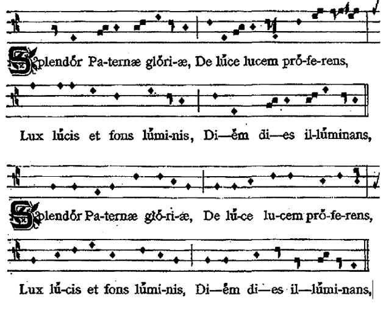

Latin İlahi Sanatı
Giacomo Baroffio
IV. yüzyıldan itibaren şarkıyla ifade edilen manzum dua örnekleri ortaya çıkar; bu türün en gelişmiş biçimi, litürjik ilahiler olacaktır. Roma Kilisesi tarafından kabul edilmesi XII. yüzyılı bulacak olan ilahiler bu arada geçit törenleri gibi başka kutlamalarda yaygın olarak kullanılırlar. Erken ortaçağda bu ifade türünün yanı sıra tek sesli şiirler ile Karolenj döneminde Frank litürjisinde Roma ayinlerinin kullanımından doğan gereksinimlere cevaben seguentia da ortaya çıkar.
Manzum Duadan Şarkı Şeklindeki Şiirsel Duaya
Poitiers piskoposu Hilarius ve Aziz Ambrosius
IV. yüzyılın ikinci yarısında Latin egemenliğindeki Batıda, litürjik ilahilerin temelinde yatan ve “mezmur şiiri” (Wolfram von den Steinen) adı verilen bir şiir türünün ilk örnekleri görülmeye başlanır. Poitiers piskoposu Hilarius (y. 315-y. 367) açısından, İznik [Nikaia] Konsili’nde (325) öne sürülen teolojiyi savunma kaygısı, lirik ilhama baskın çıkar. Ante saecula qui manens [Beklenen Yüzyıllardan Önce] adlı, her kıtası alfabetik sıralı harflerle başlayan uzun ilahisinde dogmatik önermelerin karmaşıklığı ve kullanılan dilin zorluğu bu bestenin litürjide yaygın olarak kullanılmasına engel olmuştur.
Milano piskoposu Aurelius Ambrosius’un (y. 339-397) edebi üretimi bundan çok farklıdır. Ambrosius, ona atfedilen bir düzine kadar şiirde, her biri bir kısa bir uzun heceli iki ayaklı (kısa ve uzun değerlerin birbirini izlediği sekiz hece) dört mısradan oluşan sekiz kıtalık, akıcı bir vezin yapısı seçer. Şair, teolojik açıdan derin anlamları ifade etmek ve İsa’ya olan tutkulu inancını seslendirmek için kararlılık sergileyen imgeleri ustalıkla kullanır. Her gün okunan şafağa övgü duasında cemaat Ambrosius’la beraber İsa-Işık diye şarkı söylerken Tanrı’ya doğrudan, ikinci tekil şahısla seslenir:
Splendor paternae gloriae Ey Tanrı’nın yüce şanı
de luce lucem proferens Işıktan ışık yayan
lux lucis et fons luminis Ey ışığın ışığı ve aydınlığın kaynağı
diem dies illumina Günleri aydınlatan gün

Aziz Ambrosius'un ilahisinin Garbagnati baskısındaki (1897,4 ve 7) iki melodik versiyonu (kışlık ve yazlık). Milano litürji kitaplarına özgü Got-Lombard notasyonu burada da kullanılmıştır.
Bu şiirler için bestelenen müzikler, yaygın olarak kullanılmasına katkıda bulunur. Aziz Ambrosius’un ilahileri cemaati büyüler, kısa sürede Avrupa’nın tamamına yayılır ve bundan sonraki ilahi yazma ve besteleme sürecinde en çok izlenen model haline gelirler.
Müzik ve icra
İlahi müziğiyle ilgili henüz çözülmemiş iki sorun söz konusudur. Aziz Ambrosius’un ilahileriyle ortaçağ ilahilerinin büyük çoğunluğunda, metinin yazarlarının bestelemiş olabileceği melodiyi tespit etmek her zaman mümkün olmaz. Başka bir deyişle metinler belli kişilere atfedilebilir, ama müzikler genelde anonimdir. İcraya gelince, ilahilerin farklı ölçü değerleriyle, metinin hecelerine tekabül eden kısa ve uzun notalarla söylenmiş olması ihtimal dışı değildir. Bu konuda örnekler yoktur. İlahilerin ölçü unsurunu tartışmasız bir şekilde açıklayan en eski kaynaklardan biri ancak XIV. yüzyıl sonlarına tarihlenir. Oristano elyazmasında (Aula Capitolare, P. XIII, 25r) kısa notalarla (baklava şekli) uzun notaların (kare) birbirini izlediği görülebilir.
Codice d’Oristano, Avla Capitolare, P. XIII, 25r
Aurelius Prudentius
Bir başka Hıristiyan şair olan Aurelius Clemens Prudentius (348-405’ten sonra), Ambrosius’a göre klasik Latin kültürüne daha bağlıdır. İspanya asıllı olan şair, iki uzun ilahi derlemesi hazırlamıştır: Cathemerinon [Saatlerin Kitabı], gündüz saatleri için yazılmış 12 ilahi, Peristephanon da [Şehitlik Taçları] şehitlerin onuruna yazılmış 14 ilahi içerir. Prudentius’un VIII ila X. yüzyıl arasında litürjiye kabul edilen ilahileri arasında bazı şiirlerinden bölümlerin farklı versiyonları vardır. Aziz Ambrosius’un eserlerinin etkisinin göründüğü metinler arasında salı günleri onuruna söylenen ilahi vardır:
Ales diei nuntius Günün kanatlı habercisi
lucem propinquam praecinit Yaklaşan ışığı müjdeler
nos excitator mentium İsa zihinlerimizi uyandırır
iam Christus ad vitam vocat Bizi hayata davet eder
Coelius Sedulius
Prodentius’un çağdaşı olan şair Coelius Sedulius’tan (V. yüzyıl) günümüze, İsa’nın yaşamını konu alan, “Ambrosius tarzı” 23 kıtadan oluşan ve alfabetik sıralı harflerle başlayan bir şiir kalmıştır. Şiirin ilk kıtalarından elde edilen metin, biri Noel’i (A solis ortus cardine [Güneşin Doğuşunu Gören Topraklardan]), diğeri Yortu’yu (Hostis Herodes impie [Ey Kâfir Düşman Herod]) kutlamak için iki çok ünlü ilahi elde edilmiştir. Burada muhtemelen ilk defa başvurulan, özgün bir metinin birbirinden bağımsız iki veya daha fazla kısma bölünmesi süreci sonradan mezmur ve ilahi alanında yaygınlaşacaktır.
Geçit Töreni İlahileri
İlahiler bazı katedrallerde ve Norcialı Aziz Benedictus’un (y. 480-y. 560) kurduğu monastik tarikatta Dua Saatleri Litürjisi’ne dahil edilir. Ancak Roma Kilisesi ilahileri kabul etmez veya birkaç girişimden sonra kullanmaktan vazgeçer. İlahilerin Roma’da söylenmeye başlaması XII. yüzyılın sonunu bulur. Ancak bu durum, bu edebi-müzikal türün diğer kutlama bağlamlarında kendini kabul ettirmesine engel olmaz. Örneğin ilahiler sayısız geçit törenine, ayine dahil edilir ve yürüyüşün gereksinimine göre bazı yapısal değişimlerden geçer. Geçit töreni ilahilerini Dua Saatleri Litürjisi’nde kullanılan ilahilerden ayırt eden şey, birbirlerini izleyen kıtaların arasında yer alan bir kıta olan nakarattır. Nakarat kısmını kolaylıkla ezbere öğrenilebilen cemaat, bir solist tarafından icra edilen asıl kıtaların arasında bu kısmı söyleyebiliyordu.
En yaygın olan ve kısmen günümüz litürjisinde de var olmaya devam eden geçit töreni ilahileri arasında, Valdobbiadene doğumlu Poitiers piskoposu Venantius Fortunatus’un (y. 540-y. 600) şiirlerinden alınma çeşitli bölümler vardır. Bunların arasında Kutsal Haç onuruna yazılan ilahiler (Crux benedicta nitet [Kutsal Haçın Işıltısı] Vexilla regis prodeunt [Kralın Bayrakları Dalgalanır]) özellikle önemlidir, Paskalya geçit töreni ilahisi Salvefesta dies’in [Selam, Bayram Günü] kimin tarafından yazıldığı belirsizdir. Kutsal Cuma günü haç ibadeti için seçilen ilahi olan Pange lingua gloriosi proelium certaminis, bir uzun bir kısa heceli, dört vezinli, son hecesi eksik ölçü, yürüyüş ritmindeki Roma birliklerinin versus guadratus adındaki hızlı ritmini yankılar.
Pange lingua gloriosi proelium certaminis
et süper crucis tropeum dic triumphum nobilem
gualiter redemptor orbis immolatus vicerit
Yücelt, ey dilim, şanlı mücadelenin zaferini
Haçın karşısında kazanılan başarıyı ve
Dünyanın kurtarıcısının kurban olup nasıl kazandığını anlat
Bundan birkaç yüzyıl sonra yaşamış olan Aziz Petrus Damiani de (1007-1072) Venantius’un eserlerinden ilham alır. Haç onuruna bir ilahi olan Crux benedicta nitet, Damiani’nin Unica spes hominum [insanların Tek Umudu] adlı derlemesinin XCIII ölçüsü için bir model oluşturur. Bu, ilahide her kıta aynı kelimelerle başlar ve biter. Petrus Damiani’nin eserleri arasında Unica spes hominum günümüze müziksiz olarak ulaşmış tek ilahidir. Bu ilahinin müziğinin, Crux benedicta nitet’in elyazması geleneğinden elde edilme ihtimali vardır:
Unica spes hominum crux o venerabile signum
omnibus esto salus unica spes hominum
İnsanların tek umudu, yüce işaret,
Herkesin kurtuluşu, insanların tek umudu ol.
Tek Sesli İlahiler
Aquileia piskoposu II. Paulinus’un (?-802) şiirleri, en güzel şiir geleneğine dahildir. Karolenj sarayında bir teolog ve çok beğenilen bir şair olan Paulinus, planctus, yani daha sonraları Abelardus’un da uyguladığı bir tür olan ağıtlardan ölçülere, ilahilerden, De paenitentia [Tövbekârlık Üzerine] adlı alfabetik sıralı harflerle yazılmış eser gibi, farklı olaylar onuruna yazılmış ilahilere kadar şiir türünde birçok eser yazmıştır. Zaman içinde Aquileia piskoposu’nun şiirlerinden birçok bölüm litürjiye dahil edilmiştir. Bunların arasında en ünlü olanı, 796 yılına doğru Cividale’de gerçekleşen bir dini sinod için yazılmış ve nakaratı Ubi caritas est vera (et amor) ibi Deus est [Sevginin olduğu yerde daima Tanrı vardır] olan bir ilahidir. Orleans piskoposu Theodulphus (750/760-y. 821) Paskalya onuruna şiirler ve In adventu regis [Kralın Gelişi] adında iki ağıt yazmıştır. Theodulphus, ortaçağdan günümüze kadar gelmiş olan ve Paskalya’dan önceki pazar günü söylenen bir dizi geçit töreni ilahisi Gloria laus et honor’la da [Şan, şeref ve övgü senin olsun] hatırlanır. Bu yüceltme ve şükür amaçlı metin çeşitli melodilerle günümüze ulaşmış olup İtalya’da en yaygın olanı şöyledir:
Gloria laus et honor tibi sit rex Christe redemptor
cui puerile decus prompsit osanna pium
Şan, şeref ve övgü senin olsun Kurtarıcı İsa
Çocuklar sana coşkulu bir şükür yöneltti
Sequentia
Sequentia, Karolenj litürjisinin bir yeniliği olup kısa sürede her yere yayılan bir türdür. İlahiler ile sequentia’lar arasında belirgin bağlantılar vardır. Her ikisi de kıtalardan oluşur: İlahilerde tüm kıtalar aynı vezin yapısına sahipken (a a a...), çeşitli denemelerden sonra seguentia’da kendi nihai yapısını kazanır. Sequentia’da ikili kıtalar olup (aa bb cc...) bunlara genelde başta ve sonda ayrı bir kıta eklenir (a bb cc dd... z). Sonuçta, ilahilerin tüm kıtaları tek bir melodiyle söylenirken, sequentia’larda her iki kıtanın kendine özgü melodileri vardır.
VIII. yüzyılın ikinci yarısında sequentia’larla Frank dünyasının güçlü bir şekilde hissettiği iki ihtiyaca cevap verilmeye çalışılır: 1) Kitabı Mukaddes’ten alınma metinlere sahip ilahilerin neredeyse tamamıyla egemen olduğu komünyon litürjisinde yeni ilahiler, teolojinin ve kültürel-estetik duyarlılığın daha kolay anlaşılan bir dille ifade edilmesi için bir fırsat sunar. Sequentia insan ruhunun, o ana kadar kelimesiz melodilerle ifade edilmiş olan en derin içeriğini seslendirir. 2) Sequentia ayrıca sözlü kültür ortamında Alleluia’dan veya diğer melizmatik metinlerden sonra yer alan çok uzun melizmaların (sequentiae) öğrenilmesini kolaylaştırır. Benimsenen bu işlemde, tek tek müzik notalarının altına yeni bir metinin heceleri yerleştirilir.
Seguentia ‘nın şiirsel nesri; gelişimini etkileyen bazı özelliklere sahiptir. En eski metinlerde kıtaların hepsi, Alleluia’nın yankısını uzatmak istercesine “a” harfiyle biter. Notker Balbulus (y. 840-912), yani Kekeme Notker ve diğer sequentia yazarları bazen tek tek kelimelerin hece sayısının, neuma notalarının ifade ettiği müzik notalarının sayısıyla aynı olmasına dikkat ederler.
Segueratial’ar uzun bir gelişim döneminden sonra XII. yüzyılda Paris kültürünün ve Aziz Victor okulunun derin etkisi altında kalacaktır. Bu dönemde kıtalar sekizli ve yedili gruplardan oluşurlar, bir dizi kafiye oluştururlar ve o ana kadar çok sık rastlanmamış olan melodik sıçrayışlarla ilerlerler.
Bkz. Edebiyat ve Tiyatro: Gregorius Magnus ve Azizlerin Yaşam Öyküleri, s. 669; Bizans Dini Şiirleri s. 690